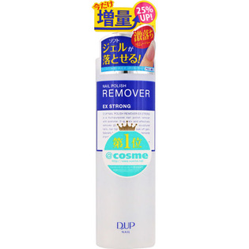

返回列表
产品名称：ディーネイルス ネイルポリッシュリムーバーEX

ディー・アップ ディーネイルス ネイルポリッシュリムーバーEX ＿
メーカー ディー・アップ
JANコード 4946324016005
商品の特徴
アセトン配合で、落ちにくいラメや濃い色のマニキュアも素早く落とします。
ソフトジェルのオフにも使用でき、チップも溶かしてはがすネイルサロン仕様のリムーバーです。
成分・分量
用法及び用量